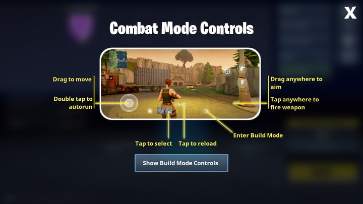
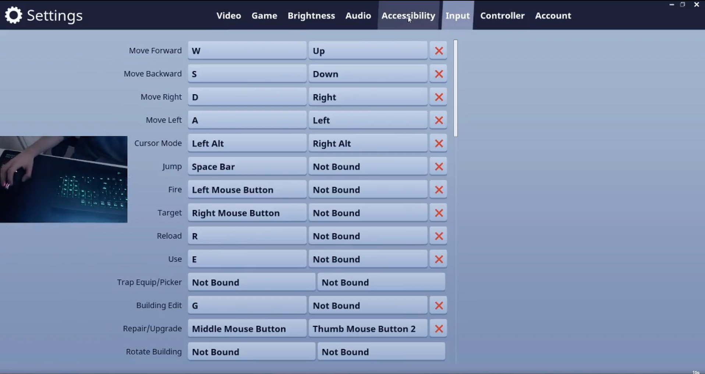
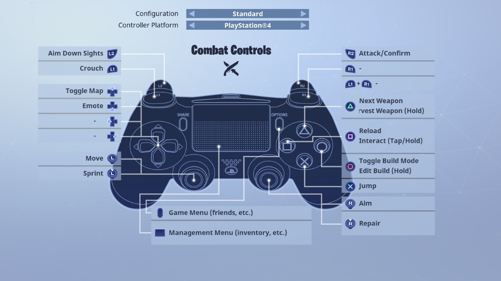

Fortnite how to play:

The game is simple! basically you would try to build and shoot other players! think of it as cartoon pubg wherer you can build and basically destroy everything with pickaxes. if you want the more detailed version"of the game" clike on the highlighted words and it would take you there.
The controlles?
- On mobile, you would need to use the joysticks and other buttons to build and play the game. there was memes about fortnite mobile players and how they are so bad at the game. but as technology grew now, fortnite mobile players dominate and could possibly compete in the world cup running 120 fps!
- On consels you would use your usual controller and play the game in your own button binds. pretty easy and usual for normal gamers.
- Now, saving the best for the last, PC players are ones that dominate from the birth of fortnite till now! they could do cool edits and other fancy tricks! the controlles are the same to other shooters but you would need to get used to the building tactics!
- IOS 
- PC 
- Consels 
All the controlls in different divices...
Here is a video on how to play fortnite!